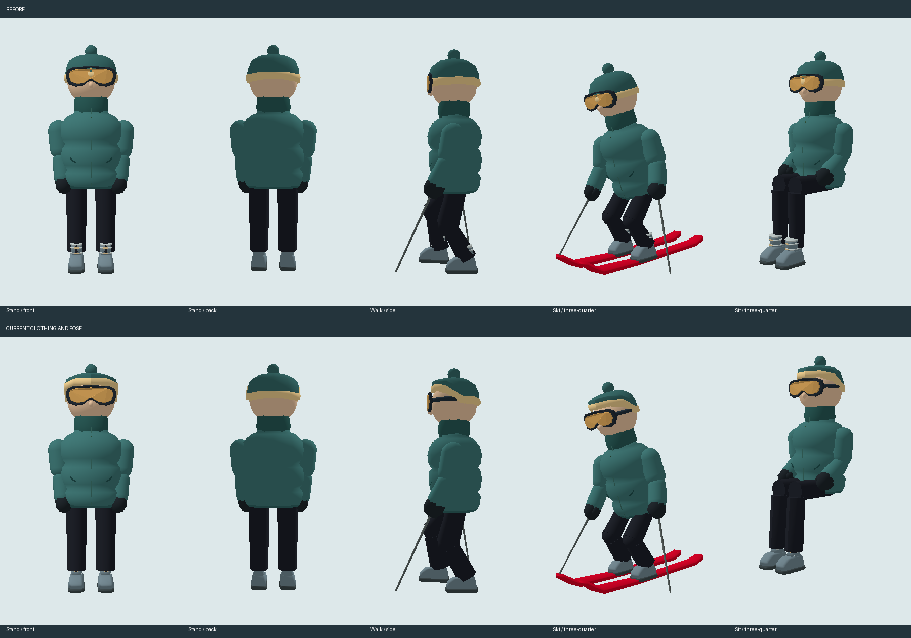

New skierDrag to orbit. Scroll to zoom.
Pose revision: the thighs rest on the seat, and the poles pivot at the hands and stay outside the skis. Before compares earlier clothing; both models use the current walking and skiing animation.
The poses use the game's walking and ski animation code. This study does not open or change a resort save. Browser performance and live lift clearance still need review.
Show the geometry contact sheet
Offline software rendering of the actual rig and mesh data, not an in-game screenshot.
